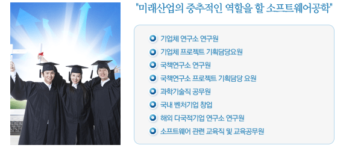

| {#inc_top} |
| {#inc_sub_img} |
|
| {#inc_sm} |
| |
|
|
| |
|
| |
 |
|
| |
소프트웨어공학과를 졸업 후의 진로는 매우 다양하다. 학과과정 편성시 현재 우리나라 및 세계적인
기업체가 원하는 분야들을 충실히 반영하고 있으므로 본 학과의 졸업생은 다음과 같은 다양한 미래의
진로를 가진다. 이외에도 신규로 생성가능한 컴퓨터 관련 직종에 능동적으로 대처해 나가는 훌륭한
인재로서의 역할에 충실하리라 생각된다 |
|
| |
 학과 관련 취득 자격증 학과 관련 취득 자격증 |
|
| |
자격증 |
시행처 |
취득방법 |
정보처리기사
|
한국산업인력공단 |
+ 시험과목 -
필기 : 데이터베이스, 전자계산기구조, 운영체제, 소프트웨어공학 데이터통신
실기 : 정보처리 실무
+ 검정방법 -
필기 : 과목당 객관식 20문항(과목당 30분)
실기 : 작업형(3시간 정도, 배점 100점)
+ 합격기준 -
필기 : 100점을 만점으로 하여 과목당 40점 이상, 전과목 평균 60점 이상.
실기 : 100점을 만점으로 하여 60점 이상. |
멀티미디어
전문가 |
한국멀티미디어
협회 |
+ 시험과목 -
멀티미디어 개론, 기획 및 시나리오 작성, 컨텐츠디자인 및 제작기술, 멀티미디어 저작도구 이해, 인터넷특론 및 저작기술
+ 합격기준 - 1급 80점 이상 - 2급 60점 이상 |
정보처리
기능사 |
한국산업인력공단
|
+ 시험과목 -
필기 : 1.전자계산기일반 2.패키지활용 3.PC운영체제 4.정보통신일반 실기 : 정보처리 실무
+ 검정방법 -
필기 : 객관식 4지 택일형
실기 : 작업형(2시간 정도, 배점 100점)
+ 합격기준 -
필기 : 100점을 만점으로 하여 전과목 평균 60점 이상.
실기 : 100점을 만점으로 하여 60점 이상. |
인터넷정보
검색사 |
한국정보통신
인력개발센터 |
+ 시험과목 -
필기시험(50분) -
1교시 : 4지선택형 객관식(40문항) -
2교시 : 단답식(20문항), 약술식(10문항) * 인터넷 일반개요 및 상식 (20%), 사용자환경 및 구축(20%), 인터넷 자원탐색(60%)
+ 면접시험(60분) -
1교시 : 수험생의 정보검색 능력 평가(10문항 내외) 해당 문제의 정 답 및 위치(URL) 기재.
2교시 : 수험생의 HTML문서 작성 능력 평가(3 ~ 4문항) 노트패드, 워드패드(WIN98 내장)로 제작, 파일 전송 및 디스켓 저장.
+ 합격기준 -
1차 시험 : 100점 만점, 평균 60점 이상. [과락] 과목당(1, 2교시로 구분) 40점 미만.
2차 시험 : 평균 60점 이상. [과락] 정보검색 52점 미만, 홈페이지 28점 미만. |
워드프로세서
1급 |
대한상공회의소 |
+ 시험과목 -
필기 (매과목 100점) : 워드프로세싱 용어 및 기능, PC 운영체제, PC 기본상식
실기 (100점) : 문서편집기능
+ 검정방법 -
필기 : 객관식
실기 : 워드프로세서 프로그램을 이용한 평가
+ 합격기준 -
필기 : 매 과목 40점 이상, 전 과목 평균 60점 이상
실기 : 제한시간 30분, 80점 이상 |
전자상거래
관리사 |
대한상공회의소 |
+ 시험과목 -
필기 : 1전자상거래 기획 2전자상거래 운영 및 관리 3전자상거래 시스템 운영 및 관리 4전자상거래 관련법규
실기 : 면접
+ 검정방법 -
필기(객관식), 실기(면접)
+ 합격기준 -
필기 : 매 과목 100점 만점에 과목당 40점 이상, 평균 60점 이상
실기 : 100점 만점에 60점 이상
+ 응시자격 -
해당종목의 2급 자격 취득 후 해당실무에 3년이상 종사한 자.
해당실무에 5년이상 종사한 자
대학졸업 후 해당 실무에 3년이상 종사한 자
전문대학 졸업 후 해당실무에 4년이상 종사한 자 |
네트워크
관리사 |
한국정보통신
자격협회 |
+ 시험과목 -
필기시험:네트워크일반(15), TCP/IP(15), NOS+응용프로그램(15), 네트워크운용기기 (5), 정보보호개론(10)
실기시험:LAN전송매체, 네트워크 설계/구축, TCP/IP(Packet분석포함), NOS(NT4.0, 백오피스,Linux), 네트워크운용기기
+ 검정방법 -
필기시험:60분, 객관식
실기시험:100분, 서술형 또는 작업형
+ 합격기준 -
필기시험:매과목별 100점 만점에 40점이상, 전과목 평균 60점 이상 실기시험:100점 만점에 60점 |
|
|
| |
|
|
|
| |
| |
| |
| |
|
|
| |
|
|
|
|
|
|